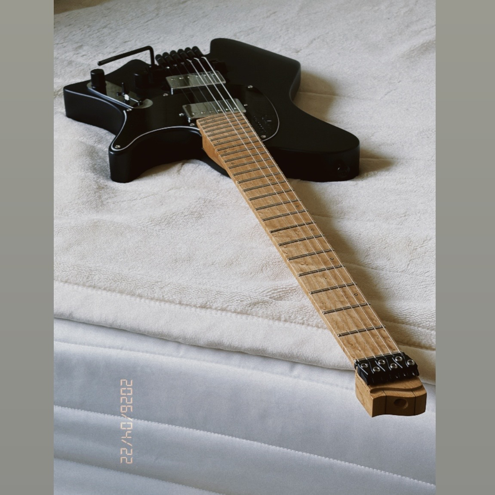
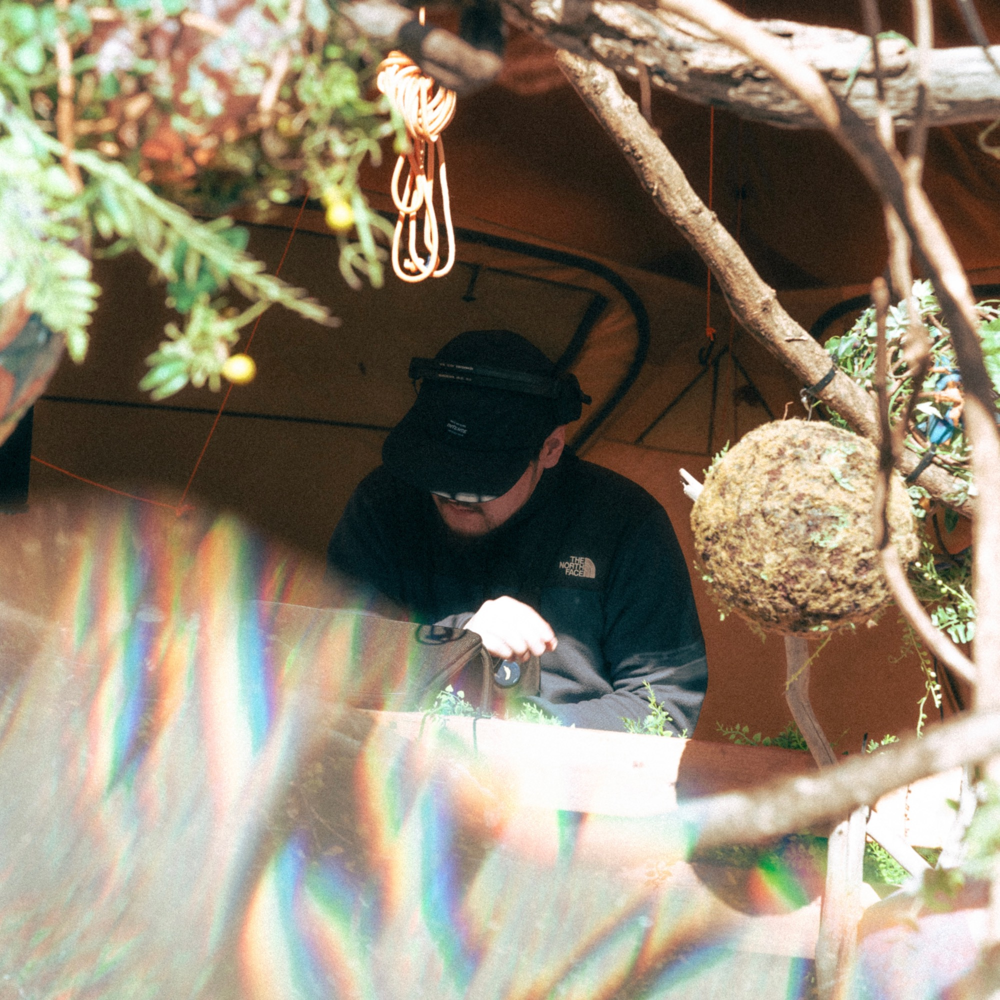
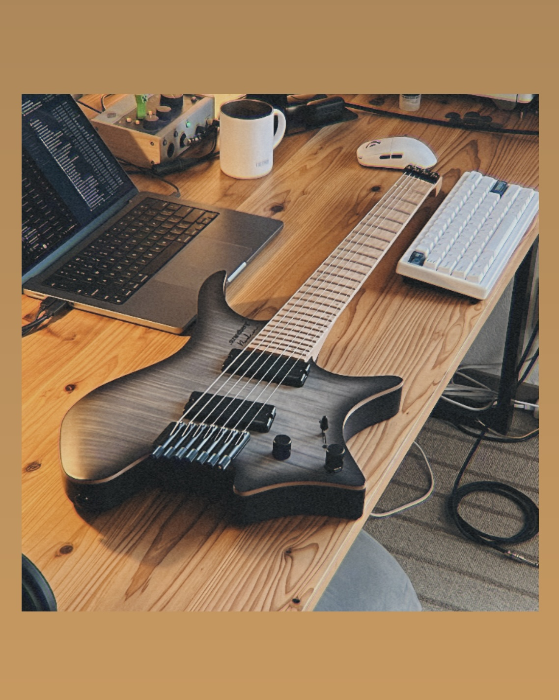
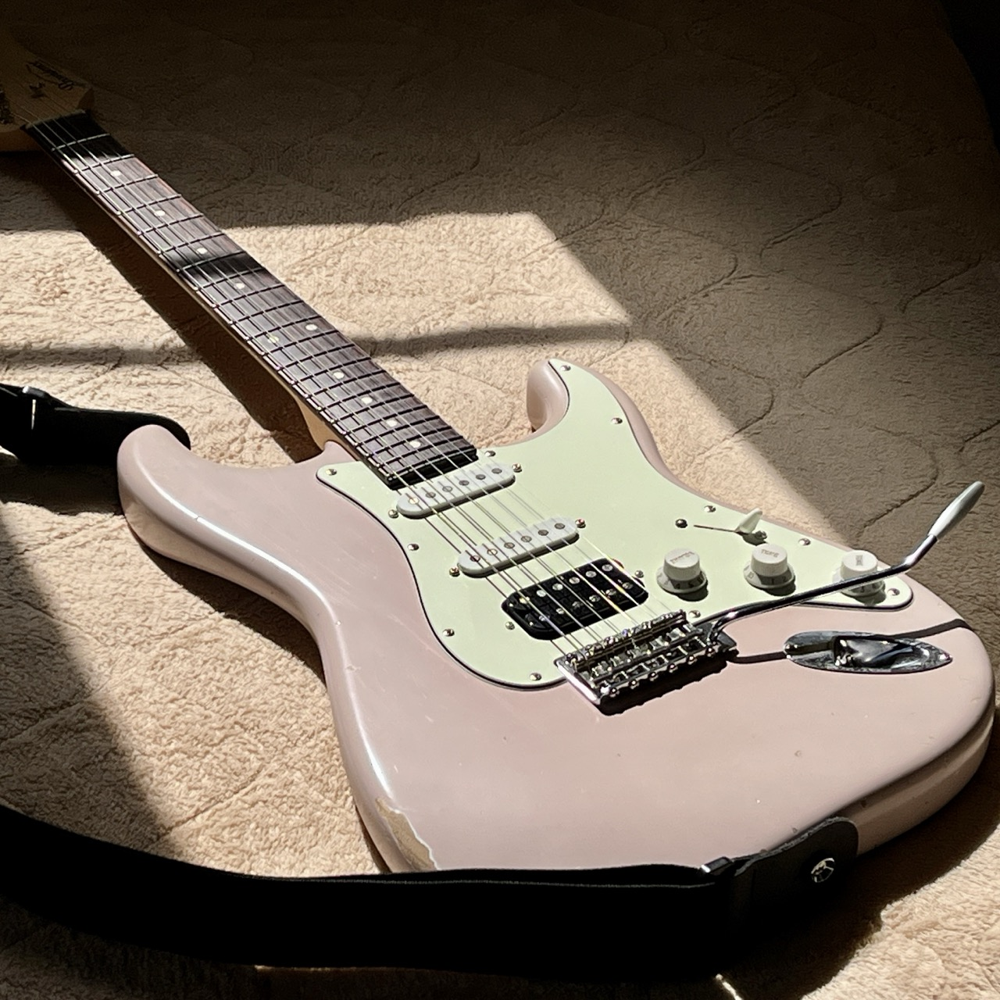
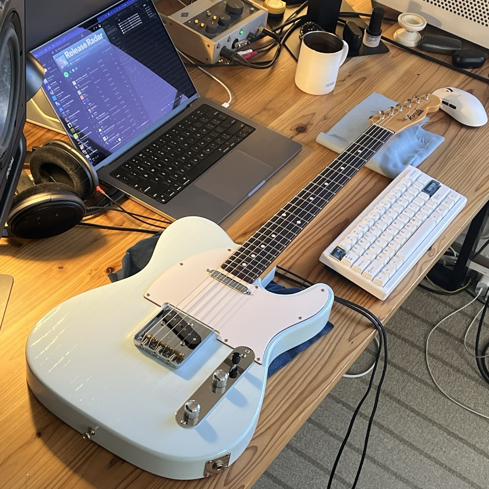
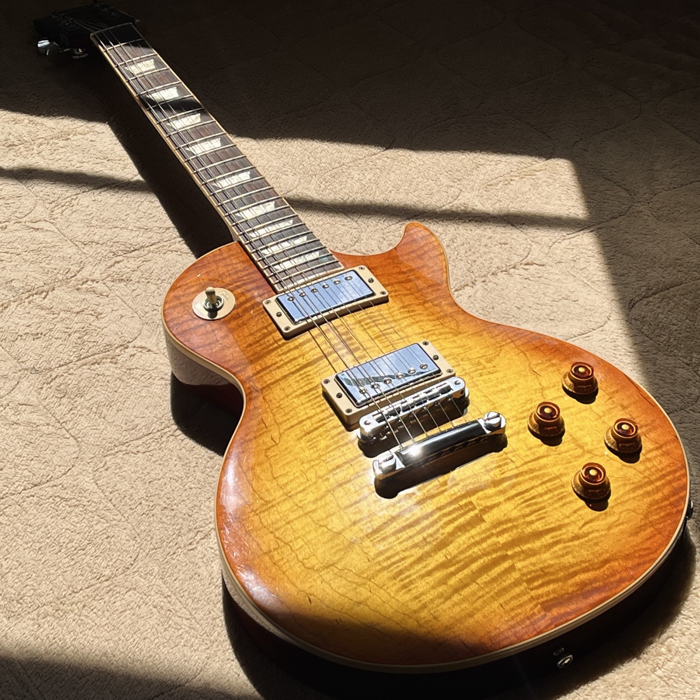
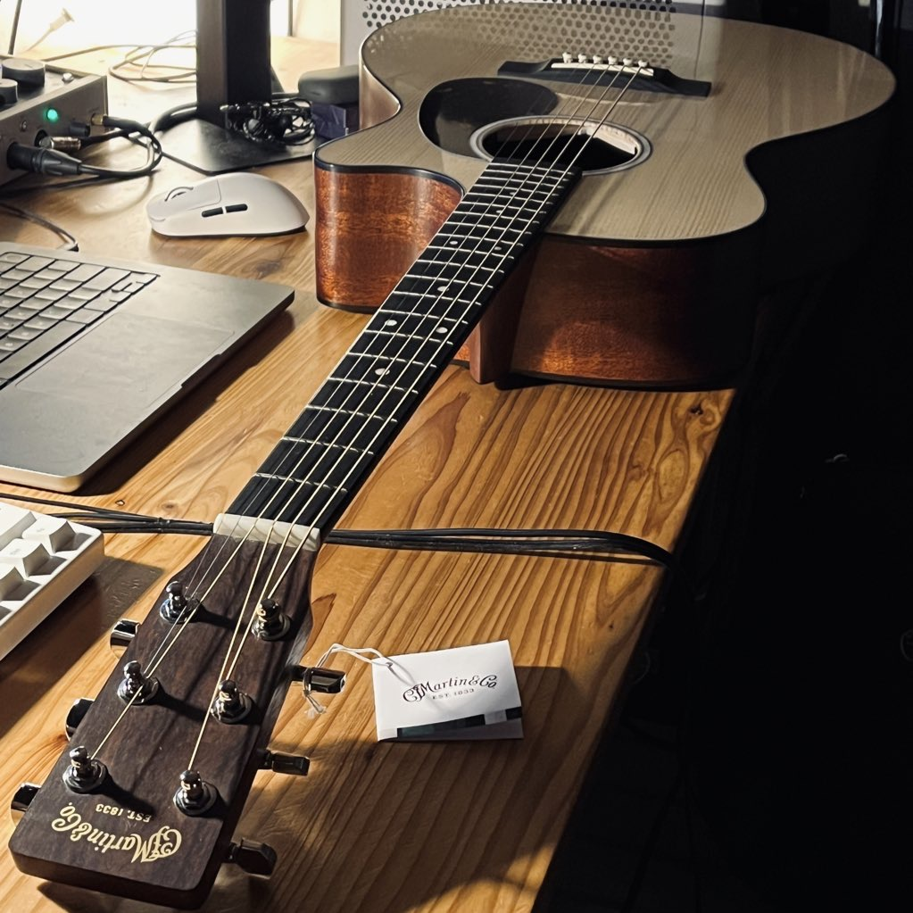
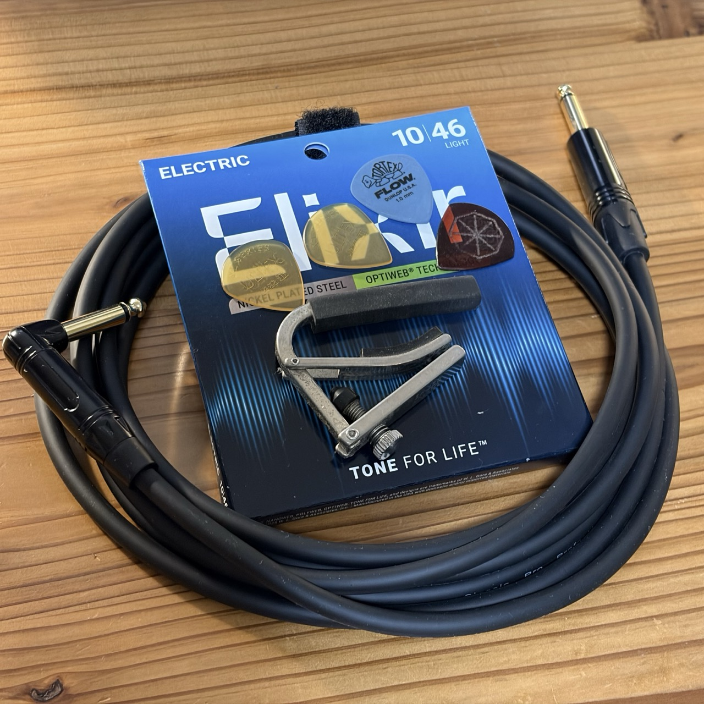
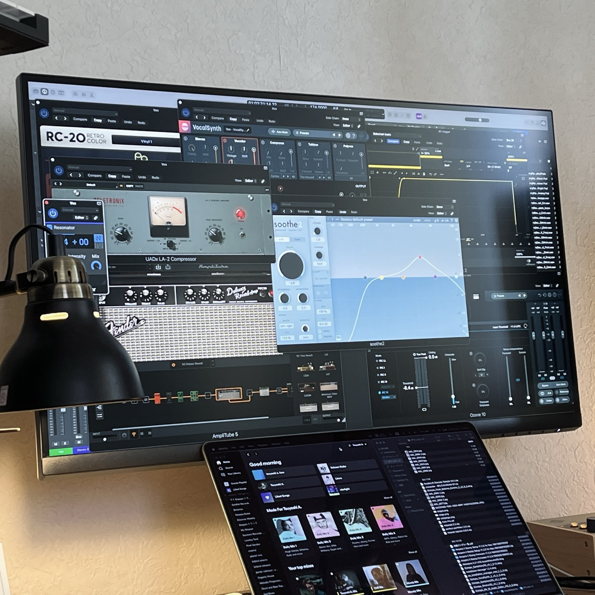

Sälen classic nx6 trem
solid body strandberg headless. 24f passive HH 5way blade w/trem. The ultimate 6st workhorse
ギタリスト / 作編曲家。国内外のレーベルへの楽曲提供、ギターレコーディング、ミックス・マスタリング、音声編集などを手がけています。

メイン楽器のギターを2011年ごろから触り始め、REC、アレンジ、ライブやサポートなど作編曲、自宅rec等で使用しております。
その延長線に2019年頃より楽曲制作とDJをはじめ、主に海外レーベル、オランダ bitbird をはじめ複数レーベル等から楽曲をリリースしています。ほか国内アルバムにも複数参加など作編曲、演奏やDJ等に取り組んでいます。その一方で声優さんの音声編集サポートやずんだもんプロジェクトのサポート、アニソン現場の裏方など支える業務もさせていただいております。
2022年には San Holo 自身のレーベル bitbird にサインし楽曲をリリース、J-WAVE, block.fm 等ラジオでも取り上げられたほか楽曲提供、作品BGMなど制作をしながら、その後イギリス exobolt から2曲リリースされました。最近では ZETA DIVISION ストリーマー k4sen さんと Diverse System 企画のアルバム新作 Stream Palette 5 -chatting- に楽曲が収録されております。
いずれも対応可能でございます。英語でのやりとりも可能です。
実際に制作・演奏で使用している機材です。

solid body strandberg headless. 24f passive HH 5way blade w/trem. The ultimate 6st workhorse

very solid headless strandberg 7string. 26.25 inch length and the fishman pu works really well. I use 10-64

very versatile jp strat for most guitar music I play. sounds good plays good and looks good.

made by Altero custom guitars in Shiga, Jpn. sounds good plays good and looks good as well.

USA les paul. weight-relief les paul. flame top looks killer. sounds good as well

martin acoustic guitar. sounds good plays good. I like the look of it.

optiweb mainly. Dunlop picks, hd600, uavolt276, cp hq cables.

Logic, izotope, ua, oek, xfer, cableguys, NI, ik, xln, softube, korg, spitfire, melodyne, ggd, neural dsp etc...
楽曲制作・アレンジ、ギターレコーディング、ミックス／マスタリング等のご依頼を承っています。